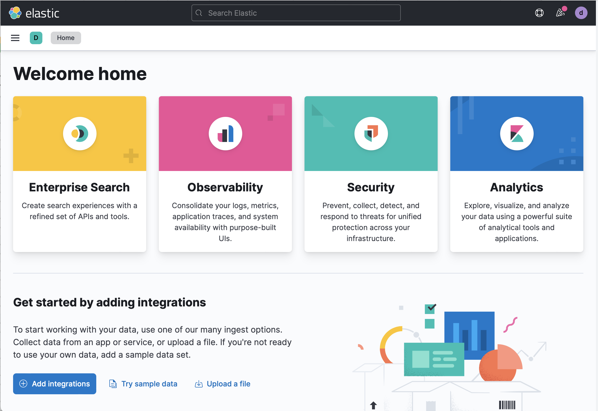

Collect Logstash monitoring data for stack monitoring
editCollect Logstash monitoring data for stack monitoringedit
Elastic Agent collects monitoring data from your Logstash instance and sends it directly to your monitoring cluster. With Elastic Agent collection the monitoring agent remains active even if the Logstash instance does not.
You can enroll Elastic Agent in Fleet for management from a central location, or you can run Elastic Agent standalone.
Prerequisites
Complete these steps as you prepare to collect and ship monitoring data for stack monitoring:
Disable default collection of Logstash monitoring metrics
The monitoring setting is in the Logstash configuration file (logstash.yml), but is
commented out:
monitoring.enabled: false
Remove the # at the beginning of the line to enable the setting.
Specify the target cluster_uuid (optional)
To bind the metrics of Logstash to a specific cluster, optionally define the monitoring.cluster_uuid
in the configuration file (logstash.yml):
monitoring.cluster_uuid: PRODUCTION_ES_CLUSTER_UUID
Set up Elasticsearch monitoring
Set up Elasticsearch monitoring. If you would like to create a dedicated monitoring cluster (optional), check out Elasticsearch monitoring documentation.
Create a monitoring user (standalone agent only)
Create a user on the production cluster that has the
remote_monitoring_collector built-in role.
Install and configure Elastic Agentedit
When you have completed the prerequisites, install and configure Elastic Agent to monitor host logs and metrics. We’ll walk you through the process in these steps:
Check out Installing Elastic Agent in the Fleet and Elastic Agent Guide for more info.
Add the Elastic Agent Logstash integrationedit
-
Go to the Kibana home page, and click Add integrations.
 - In the query bar, search for Logstash and select the integration to see more details about it.
- Click Add Logstash.
- Configure the integration name and optionally add a description.
-
Configure the integration to collect logs.
- Make sure that Logs is turned on if you want to collect logs from your Logstash instance, ensuring that the required settings are correctly configured:
- Under Logs, modify the log paths to match your Logstash environment.
-
Configure the integration to collect metrics
- Make sure that Metrics (Stack Monitoring) is turned on, and Metrics (Technical Preview) is turned off, if you want to collect metrics from your Logstash instance
-
Under Metrics (Stack Monitoring), make sure the hosts setting
points to your Logstash host URLs. By default, the integration collects Logstash
monitoring metrics from
localhost:9600. If that host and port number are not correct, update thehostssetting. If you configured Logstash to use encrypted communications, you must access it via HTTPS. For example, use ahostssetting likehttps://localhost:9600.
-
Choose where to add the integration policy.
Click New hosts to add it to new agent policy or Existing hosts to add it to an existing agent policy. -
In the popup, click Add Elastic Agent to your hosts to open the Add agent flyout.
If you accidentally close the popup, go to Fleet > Agents, then click Add agent to access the flyout.
Install and run an Elastic Agent on your machineedit
The Add agent flyout has two options: Enroll in Fleet and Run standalone. Enrolling agents in Fleet (default) provides a centralized management tool in Kibana, reducing management overhead.
- When the Add Agent flyout appears, stay on the Enroll in fleet tab.
-
Skip the Select enrollment token step. The enrollment token you need is already selected.
The enrollment token is specific to the Elastic Agent policy that you just created. When you run the command to enroll the agent in Fleet, you will pass in the enrollment token.
- Download, install, and enroll the Elastic Agent on your host by selecting your host operating system and following the Install Elastic Agent on your host step.
It takes about a minute for Elastic Agent to enroll in Fleet, download the configuration specified in the policy you just created, and start collecting data.
- When the Add Agent flyout appears, navigate to the Run standalone tab.
- Configure the agent. Follow the instructions in Install Elastic Agent on your host.
-
After unpacking the binary, replace the
elastic-agent.ymlfile with that supplied in the Add Agent flyout on the "Run standalone" tab, replacing the values ofES_USERNAMEandES_PASSWORDappropriately. -
Run
sudo ./elastic-agent install
View assetsedit
After you have confirmed enrollment and data is coming in, click View assets to access dashboards related to the Logstash integration.
For traditional Stack Monitoring UI, the dashboards marked [Logs Logstash] are used to visualize the logs produced by your Logstash instances, with those marked [Metrics Logstash] for the technical preview metrics dashboards. These are populated with data only if you selected the Metrics (Technical Preview) checkbox.

A number of dashboards are included to view Logstash as a whole, and dashboards that allow you to drill-down into how Logstash is performing on a node, pipeline and plugin basis.
Monitor Logstash logs and metrics (Stack Monitoring)edit
View the monitoring data in Kibana, and navigate to the monitoring UI.